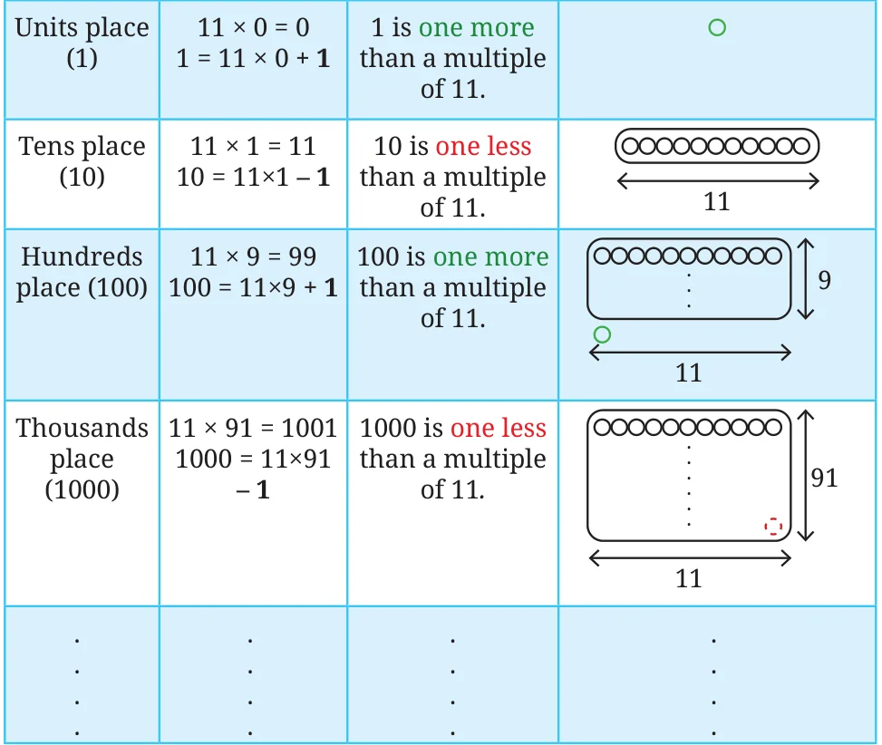

We know that all the multiples of 9 are also multiples of 3. That is, if a number is divisible by 9, it will also be divisible by 3. However, there are other multiples of 3 that are not multiples of 9 for example \(- 15\), 33, and 87.
The shortcut to find the divisibility by 3 is similar to the method for 9. A number is divisible by 3 if the sum of its digits is divisible by 3. Explore the remainders when powers of 10 are divided by 3. Explain why this method works.
A Shortcut for Divisibility by 11
Interestingly, the shortcut for 11 is also based on checking the remainders with place value. Let us see how.

This alternating pattern of one more than 11 and one less than 11 continues for higher place values. Since 400 contains 4 hundreds, 400 is 4 more than a multiple of \(11 (396 + 4)\). Since 60 contains 6 tens, 60 is 6 less than a multiple of \(11 (66 - 6)\). Since 2 contains 2 units, 2 is 2 more than a multiple of 11,
i.e., \(2 = (0 + 2)\).
Using these observations, can you tell whether the number 462 is divisible by 11?
What could be a general method or shortcut to check divisibility by 11?